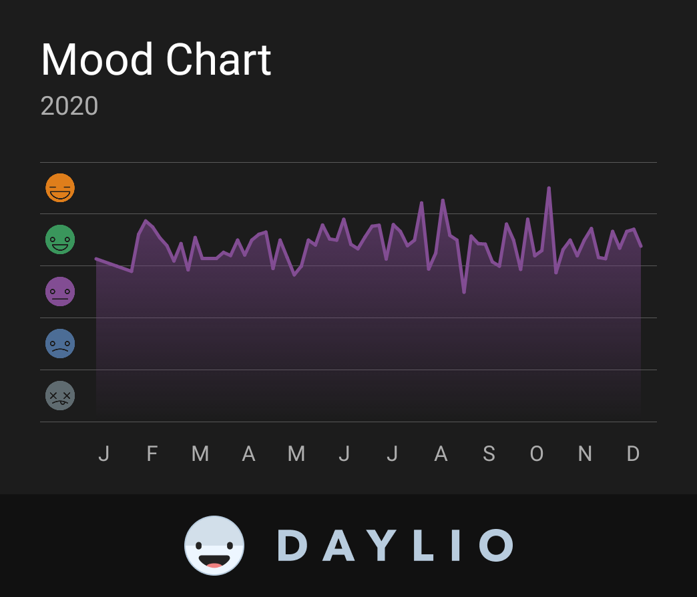

The plan for 2021
And good riddance to 2020!
How things went
Well, 13 posts throughout the year ain't too bad! I did fall off hard in the latter part of the year, as things went sour in multiple ways.
Let's see... I had to rapidly switch up my master's thesis topic, due to infeasibility of the previous idea; someone close to me got diagnosed with depression and I landed a support role; and on top of that, our government decided that hey, it's going to be a wonderful idea to take the opportunity and hit women in their reproductive rights while people are stuck at home, nobody's going to come out and protest, right?
Well... that didn't work out for them.
So, as it turned out, 2020 also ended up being the year I got tear gassed and chased by fascists for the first time. Who knew.
We attended a bunch of those protests - we were able to self-isolate pretty tightly through most of the pandemic, and neither me nor my partner are in a particularly risky group; and we felt that enough was enough. There's a lot of misinformation going on about Antifa on the internets; turns out they're wonderful as a marching band.
I should share some pictures on here... I'll do that as soon as I figure out how to.
But hey, for the first time ever I got signs that people actually read and enjoy some of this, which is nice! ;)

And there were plenty of bright moments in all this gloom and darkness; I gave my first conference talk (on PlasmaPy!), started limiting and quitting social media, got - I think - better at reading in an organized way, started reconnecting and reaching out to people while dog walking... I can't say 2020 hit me particularly hard, personally. I survived; not everyone was so lucky.
Plans for 2021
A while ago, this blog was named "Plasma non-stop". Hey, I was going through a Hamilton phase, don't judge. I later changed that name, deciding that hey, I write here mostly about programming; there's little plasma/fusion content and I feel kind of bad about overpromising with the name.
Well, that's changing. I've been explaining nuclear/fusion/plasma to enough people recently that I feel like it's going to be worth it to write all that down. Have an up-to-date reference I can link to in discussions, so to speak. And besides that... I do love popularising science, and have Thoughts on why that's an important thing to be doing.
I would also like to make my notes public, once again; I used to use vimwiki, which made that easy, but now, with Joplin, I don't yet know how to do it nicely. Once I do figure it out, they'll be accessible from here.
The blog will be going through a visual redesign; I think I'm going to get off Disqus and go with something more opensource/privacy-minded.
Last but definitely not least, I do have a master's thesis to write, and I expect I'll be able to more reliably keep you all updated on that. More on that soon.
And for now... have a better new year! :)
Komentarze
Comments powered by Disqus